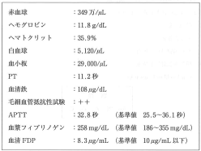
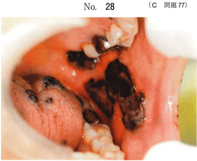
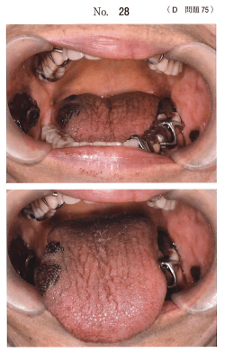
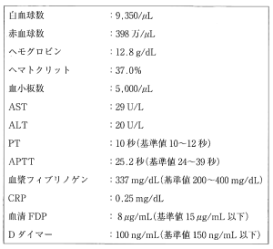
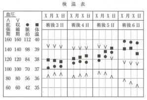
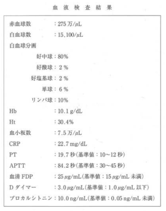

出血性素因（hemorrhagic diathesis）とは、血液の止血・凝固に必要な血管壁、血小板、血液凝固因子、線溶系などに異常が生じ、容易に止血できない状態をいう。
| 分類 | 代表疾患 |
|---|---|
| 血管壁の異常 | Osler病、Ehlers-Danlos症候群、Marfan症候群、アレルギー性紫斑病（Schönlein-Henoch紫斑病）、壊血病（ビタミンC欠乏） |
| 血小板の異常 | ITP（特発性血小板減少性紫斑病）、TTP（血栓性血小板減少性紫斑病）、薬剤性血小板減少症 |
| 凝固因子の異常 | 血友病A（第VIII因子欠乏）、血友病B（第IX因子欠乏）、von Willebrand病、ビタミンK欠乏 |
| 線溶系の異常 | プロテインC欠乏、α2-プラスミンインヒビター欠乏 |
| 複合的異常 | DIC（播種性血管内凝固症候群）、肝疾患（肝硬変） |
| 一次止血 | 二次止血（血液凝固） | |
|---|---|---|
| 主役 | 血小板 | 凝固因子 |
| 機序 | 血小板粘着・凝集 → 血小板血栓 | 凝固カスケード → フィブリン網形成 |
| 検査 | 出血時間 | PT（外因系）、APTT（内因系） |
| 検査 | 評価する経路 | 基準値 | 延長する疾患 |
|---|---|---|---|
| 出血時間 | 一次止血（血小板機能） | Duke法：2〜5分 | ITP、von Willebrand病 |
| PT | 外因系＋共通経路 | 11〜16秒 | ビタミンK欠乏、肝疾患、DIC、ワルファリン服用 |
| APTT | 内因系＋共通経路 | 30〜40秒 | 血友病A・B、von Willebrand病、DIC、ヘパリン投与 |
| FDP | 線維素溶解 | 5 μg/mL未満 | DIC |
| 疾患 | 出血の原因 |
|---|---|
| Osler病 | 血管壁の先天異常（遺伝性出血性末梢血管拡張症） |
| 血友病A | 第VIII因子欠乏 |
| 血友病B | 第IX因子欠乏 |
| 再生不良性貧血 | 血小板減少（汎血球減少） |
| von Willebrand病 | vWF欠乏（出血時間延長＋APTT延長） |
| Schönlein-Henoch紫斑病 | アレルギー性血管炎 |
| 壊血病 | ビタミンC欠乏 → 血管壁脆弱 |
血友病A = 第VIII因子欠乏（第IX因子ではない）、von Willebrand病 = vWF欠乏（第X因子ではない）の混同に注意（115C52）
ITP（idiopathic thrombocytopenic purpura）は、免疫学的機序による血小板の破壊亢進と、血小板数の減少を特徴とする。急性と慢性に大別される。
血小板抗体により脾臓で血小板の破壊が亢進し、血小板数が著明に減少する。口腔内では歯肉出血、粘膜の出血斑・紫斑、血腫がみられる。
血友病Aは第VIII因子（FVIII）の欠乏による凝固異常症で、伴性劣性遺伝（X染色体連鎖）をとる。男性に発症する。
軽症血友病では普通抜歯後に局所止血の併用で対応可。血友病Aでは抜歯前に第VIII因子製剤を補充し、FVIII活性を40%以上に上昇させてから処置を行う。
DICは、重篤な基礎疾患を背景に凝固系が全身で活性化し、微小血栓が多発する病態である。凝固因子と血小板が消費され、同時に線溶系も亢進するため出血傾向を呈する。
術後に意識混濁＋FDP↑＋血小板↓＋フィブリノゲン↓ → DICを疑う（114D85）
von Willebrand病はvWF（von Willebrand因子）の量的・質的異常による出血性疾患である。vWFは血小板の粘着とFVIIIの安定化に関与するため、出血時間の延長とAPTTの延長の両方を示す。常染色体優性遺伝。
出血性素因はどれか。すべて選べ。
【解説】壊血病はビタミンC欠乏による血管壁脆弱（血管性）、肝硬変は凝固因子産生低下（複合的）、DICは凝固因子消費＋線溶亢進（複合的）、ITPは血小板破壊亢進（血小板性）。腎盂腎炎は尿路の細菌感染症であり出血性素因ではない。
疾患と出血傾向の原因の組合せで正しいのはどれか。1つ選べ。
【解説】再生不良性貧血では汎血球減少（赤血球・白血球・血小板すべて減少）が起こり、血小板減少が出血傾向の原因となる。a：Osler病は血管壁の先天異常（ビタミンC欠乏ではない）。b：血友病Aは第VIII因子欠乏（第IX因子は血友病B）。d：von Willebrand病はvWF欠乏。e：Schönlein-Henoch紫斑病はアレルギー性血管炎。
血友病Aの患者で異常値を示すのはどれか。2つ選べ。
【解説】血友病Aは第VIII因子の欠乏であるため、第VIII因子量が低下し、内因系を反映するAPTTが延長する。出血時間（一次止血＝血小板機能）、血小板数、PT（外因系）は正常である。
69歳の女性。口腔内からの出血を主訴として来院した。3日前、突然口腔内からの出血を認めるようになり、その後、舌と左側頬粘膜に黒色腫瘤が生じたという。初診時の口腔内写真（別冊No.28）を別に示す。血液検査の結果を表に示す。
診断名はどれか。1つ選べ。


【解説】口腔内の突然の出血＋黒色腫瘤（血腫）に加え、血液検査で血小板数が著明に減少していることからITPと診断できる。ITPでは血小板の破壊が亢進し、PT・APTTは正常範囲であることが鑑別のポイントとなる。
84歳の女性。口腔内からの出血を主訴として来院した。起床時に枕に血が付いていることに気付いたが、過去に同様の症状はみられなかったという。初診時の口腔内写真（別冊No.28）を別に示す。血液検査の結果を表に示す。
原因として考えられるのはどれか。1つ選べ。


【解説】口腔内出血の症例で血液検査にて血小板数が著減していることから、血小板の破壊亢進（ITPなど）が原因と考えられる。血管の先天異常（Osler病）や凝固因子異常（血友病）では血小板数は正常である。
75歳の男性。下顎左側歯肉の腫脹を主訴として来院した。診察と検査の結果、下顎歯肉扁平上皮癌（T4aN2bM0）と診断して外科手術を行ったところ、術後6日目に意識の混濁がみられた。術後3日から6日までの検温表と術後6日目の血液検査結果を示す。
考えられるのはどれか。1つ選べ。


【解説】悪性腫瘍の術後にFDP上昇、フィブリノゲン低下、血小板減少、PT延長を認めればDICを疑う。DICは重篤な基礎疾患（悪性腫瘍、敗血症など）を背景に全身の微小血管内で凝固が亢進し、凝固因子と血小板が消費される病態である。